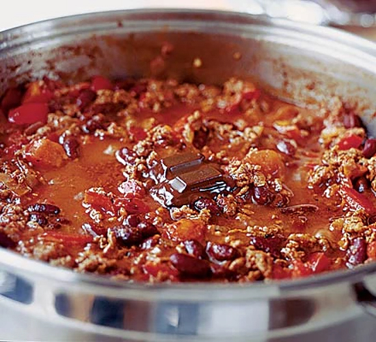

Chili Recipe

This great chilli recipe has to be one of the best dishes to serve to friends for a casual
get-together. An easy sharing favourite that uses up storecupboard ingredients.
Ingredients
- 1 large onion
- 1 red pepper
- 2 garlic cloves
- 1 heaped tbsp chili powder
- 1 tsp paprika
- 1 tsp ground cumin
- 500g lean minced beef
- 1 beef stock cube
- 400g can chopped tomatoes
- dried marjoram
- 1 tsp sugar
- 2 tbsp tomato puree
- 4x 10g can kidney beans
- Plain boiled long grain rice
- Soured cream
Method
Step 1
- Prepare your vegetables. Chop 1 large onion into small dice, about 5mm square. The easiest way
to do this is to cut the onion in half from root to tip, peel it and slice each half into thick
matchsticks lengthways, not quite cutting all the way to the root end so they are still held together.
Slice across the matchsticks into neat dice.
Step 2
- Cut 1 red pepper in half lengthways, remove stalk and wash the seeds away, then chop. Peel and
finely chop 2 garlic cloves.
Step 3
- Start cooking. Put your pan on the hob over a medium heat. Add 1 tbsp oil and leave it
for 1-2 minutes until hot (a little longer for an electric hob).
Step 4
- Add the onion and cook, stirring fairly frequently, for about 5 minutes, or until the onion is soft,
squidgy and slightly translucent.
Step 5
- Tip in the garlic, red pepper, 1 heaped tsp hot chilli powder or 1 level tbsp mild chilli powder,
1 tsp paprika and 1 tsp ground cumin.
Step 6
- Give it a good stir, then leave it to cook for another 5 minutes, stirring occasionally.
Step 7
- Brown 500g lean minced beef. Turn the heat up a bit, add the meat to the pan and break it up with your
spoon or spatula. The mix should sizzle a bit when you add the mince.
Step 8
- Keep stirring and prodding for at least 5 minutes, until all the mince is in uniform, mince-sized lumps
and there are no more pink bits. Make sure you keep the heat hot enough for the meat to fry and become brown,
rather than just stew.
Step 9
- Make the sauce. Crumble 1 beef stock cube into 300ml hot water. Pour this into the pan with the mince mixture.
Step 10
- Add a 400g can of chopped tomatoes. Tip in ½ tsp dried marjoram, 1 tsp sugar and add a good shake of salt and pepper.
Squirt in about 2 tbsp tomato purée and stir the sauce well.
And then google the rest because I have realised there is 20 steps to this recipe and it doesn't help my coding to type them all!
Enjoy your half made dinner losers!
Return to main page.
OR...
Check out our steak recipe, it will open
in another tab for your convenience!
Check out our pasta recipe, it will open
in another tab for your convenience!